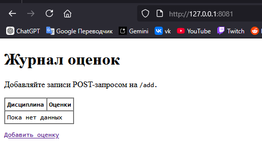
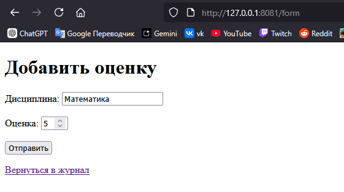
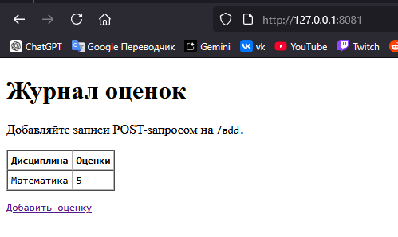
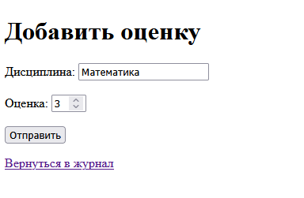
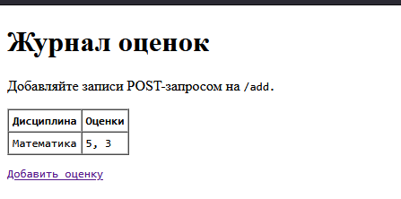
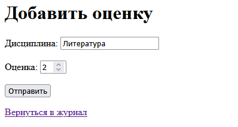
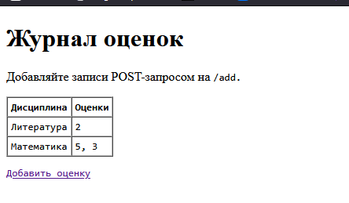

ЛР1 — Задание 5 (HTTP): Журнал оценок
Идея: простой сервер на socket, храним оценки в памяти.
- GET / или /index.html — выдаёт HTML-страницу со списком дисциплин и оценок.
- GET /form — отдаёт HTML-форму для добавления новой оценки.
- POST /add — принимает данные (subject, grade) в формате application/x-www-form-urlencoded, добавляет запись и делает редирект обратно на /.
- Оценки агрегируются по дисциплине
Как запустить
python http_grades_min_task5.py
# затем в браузер:
# http://127.0.0.1:8081/
Как пользоваться
http://127.0.0.1:8081/- список оценок (пока пустой) и ссылку «Добавить оценку».http://127.0.0.1:8081/form— откроется форма для ввода дисциплины и оценки.- После отправки формы сервер сделает редирект на
/, где уже появится новая запись.







Выводы
В ходе выполнения задания я:
- Реализовал мини-веб-сервер на TCP-сокетах, обрабатывающий HTTP-запросы типов
GETиPOSTбез использования фреймворков. - Научился вручную парсить HTTP-заголовки, определять
Content-Lengthи корректно читать тело запроса. - Освоил работу с кодировкой формата application/x-www-form-urlencoded и функцией
parse_qs()для разбора данных формы. - Реализовал три маршрута:
/и/index.html— вывод таблицы с дисциплинами и оценками;/form— отображение HTML-формы для добавления новой оценки;/add— приём данных методом POST, добавление записи в память и редирект (303 See Other) на главную страницу.
- Научился формировать корректные HTTP-ответы с заголовками
Content-Type,Content-LengthиConnection: close. - Добавил базовую валидацию и экранирование данных для защиты от XSS.
- Проверил работу в браузере: после добавления оценки страница обновляется, и запись появляется в таблице.
В результате я закрепил понимание структуры HTTP-протокола, научился формировать ответы и обрабатывать запросы вручную, а также получил опыт разработки простых серверных приложений на чистых сокетах.